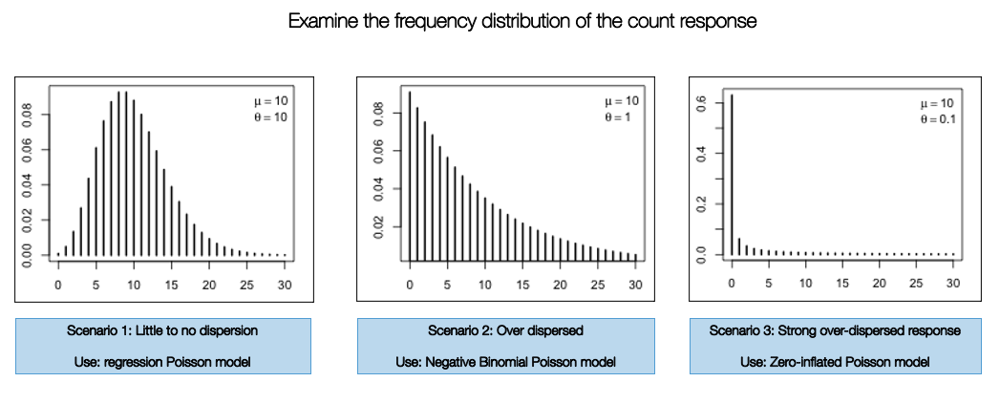
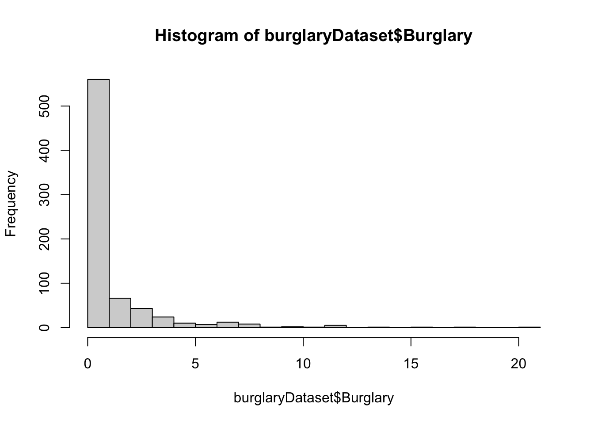

3 Generalized Linear Models
Theme: Crime, Livelihoods and Urban Poverty in Nigeria
 Photo: David Modugu; Malali Civilian JTF, Kaduna, Nigeria
Photo: David Modugu; Malali Civilian JTF, Kaduna, Nigeria
3.1 Introduction
This week we will learn how to perform generalised linear modelling to quantitative data focused on crime victimization in Africa. Context of our study: conventional analyses of crime, based on European research models, are often poorly suited to assessing the specific dimensions of criminality in Africa. the Development Frontiers in Crime, Livelihoods and Urban Poverty in Nigeria (FCLP) aims to provide an alternative framework for understanding the specific drivers of criminality in a West African urban context. This research project uses a mixed-methods approach for combining statistical modeling, geovisualisation and ethnography, and attempts to situates insecurity and crime against a broader backdrop of rapid urban growth, seasonal migration, youth unemployment and informality. The study typically provide researchers both in Nigeria and internationally with richer and more nuanced evidence base on the particular dynamics of crime in African cities.
In this practical, you will utilised the anoynmised data for the following:
- Selection of the appropriate Poisson-based model for count or rate data
- Interpretation of coefficients i.e., Odds Ratios (OR) and Risk Ratios (RR)
- Running
glm()for logistic regression model
3.1.1 Downloadable dataset for this exercise
Make sure to download the data sets for Week 3 from HERE.
3.1.2 Reading list
Please find reading list for this week:
Recommended Book (sections): Dalgaard, P. (2008). Introductory Statistics with R (Second Edition), (Download Ebook here)
Chapter 12: Linear Models. Pages 195 to 224
Chapter 13: Logistic Regression. Pages 227 to 247
Chapter 15: Rates and Poisson regression. Pages 259 to 274
3.2 Poisson Regression Modelling
Let’s try out fitting a Poisson-type model some counts of households reporting to have been victims of burglary. Load the data into RStudio can call the object burglaryDataset.
# Set your own directory using setwd() function
# Load data into RStudio using read.csv(). The spreadsheet is stored in the object called 'burglaryData'
burglaryDataset <- read.csv("WK03 - Street Burglary Data in Nigeria.csv")
names(burglaryDataset)## [1] "StreetID" "Burglary" "HousesVictim" "denominators"
## [5] "connectivity" "choice_q" "integ_q" "business_q"
## [9] "socioeconomic_q" "log_denominators"3.2.1 Selecting the appropriate Poisson model
There are three different types of Poisson models, and implementation of one of these models are highly dependent on how the frequency distribution of the count response variable are displayed. If there is any evidence of over-dispersion, you are safe to use the Negative Binomial Poisson regression.

Let’s check the frequency distribution of the outcome variable Burglary which corresponds to the number of reported instances a property on a street was burgled. You can simply use a histogram to examine its distribution:
hist(burglaryDataset$Burglary, breaks=20)
The plot show evidence of over-dispersion. It indicates that streets in Kaduna have less frequency of burglaries. Here, we consider use a Negative Binomial Poisson regression model over the standard version (i.e., scenario 1). We will need to run the glm.nb() which can be accessed after installing the MASS package.
install.packages("MASS")We are going to fit the following risk factors for street accessibility (i.e., distance, connectivity, closeness centrality and betweeness centrality) as well as levels of commercial activity and socioeconomic status, to determine the level of risk of burglary victimisation and whether they are significantly associated with such burden of crime events.
Use the glm.nb() function:
model_burglary <- glm.nb(Burglary ~ connectivity + as.factor(choice_q) + as.factor(integ_q) + as.factor(business_q) + as.factor(socioeconomic_q), offset(log_denominators), data = burglaryDataset)
summary(model_burglary)##
## Call:
## glm.nb(formula = Burglary ~ connectivity + as.factor(choice_q) +
## as.factor(integ_q) + as.factor(business_q) + as.factor(socioeconomic_q),
## data = burglaryDataset, weights = offset(log_denominators),
## init.theta = 0.4320699677, link = log)
##
## Deviance Residuals:
## Min 1Q Median 3Q Max
## -2.7187 -1.5823 -1.0841 0.1554 5.2391
##
## Coefficients:
## Estimate Std. Error z value Pr(>|z|)
## (Intercept) -0.22578 0.17902 -1.261 0.20723
## connectivity 0.06698 0.01459 4.589 4.45e-06 ***
## as.factor(choice_q)2 0.13299 0.14500 0.917 0.35905
## as.factor(choice_q)3 0.45134 0.14555 3.101 0.00193 **
## as.factor(choice_q)4 0.43299 0.18946 2.285 0.02229 *
## as.factor(integ_q)2 -0.38723 0.12962 -2.987 0.00281 **
## as.factor(integ_q)3 -0.19788 0.13159 -1.504 0.13265
## as.factor(integ_q)4 -0.39527 0.14208 -2.782 0.00540 **
## as.factor(business_q)2 -0.19583 0.16607 -1.179 0.23832
## as.factor(business_q)3 -0.26510 0.14751 -1.797 0.07231 .
## as.factor(business_q)4 0.36246 0.14393 2.518 0.01179 *
## as.factor(business_q)5 0.23496 0.14873 1.580 0.11415
## as.factor(socioeconomic_q)2 0.12752 0.14055 0.907 0.36425
## as.factor(socioeconomic_q)3 -0.05552 0.14288 -0.389 0.69758
## as.factor(socioeconomic_q)4 -0.23991 0.14445 -1.661 0.09673 .
## as.factor(socioeconomic_q)5 -0.11055 0.14526 -0.761 0.44661
## ---
## Signif. codes: 0 '***' 0.001 '**' 0.01 '*' 0.05 '.' 0.1 ' ' 1
##
## (Dispersion parameter for Negative Binomial(0.4321) family taken to be 1)
##
## Null deviance: 1667.4 on 733 degrees of freedom
## Residual deviance: 1491.2 on 718 degrees of freedom
## AIC: 5163.5
##
## Number of Fisher Scoring iterations: 1
##
##
## Theta: 0.4321
## Std. Err.: 0.0268
##
## 2 x log-likelihood: -5129.4770We the resulting estimates for the coefficient. Let extract the results for the coefficient and 95% confidence interval, and convert them to risk ratios (RR) using the exp() function.
estimates_b <- cbind(Estimate = coef(model_burglary), confint(model_burglary))## Waiting for profiling to be done...IRR_b <- exp(estimates_b)
# report risk ratios (RRs) from NB model
# estimates from model
IRR_b## Estimate 2.5 % 97.5 %
## (Intercept) 0.7978901 0.5721526 1.1187344
## connectivity 1.0692691 1.0396767 1.1002334
## as.factor(choice_q)2 1.1422400 0.8623915 1.5124151
## as.factor(choice_q)3 1.5704135 1.1739365 2.1007452
## as.factor(choice_q)4 1.5418684 1.0534077 2.2604048
## as.factor(integ_q)2 0.6789374 0.5229902 0.8808479
## as.factor(integ_q)3 0.8204698 0.6222413 1.0818248
## as.factor(integ_q)4 0.6734948 0.4958594 0.9139292
## as.factor(business_q)2 0.8221517 0.5934210 1.1383763
## as.factor(business_q)3 0.7671307 0.5705697 1.0299236
## as.factor(business_q)4 1.4368589 1.0866198 1.8968155
## as.factor(business_q)5 1.2648633 0.9485132 1.6848248
## as.factor(socioeconomic_q)2 1.1360033 0.8588107 1.5019597
## as.factor(socioeconomic_q)3 0.9459926 0.7141379 1.2522731
## as.factor(socioeconomic_q)4 0.7866948 0.5864396 1.0541278
## as.factor(socioeconomic_q)5 0.8953407 0.6685331 1.1973841Interpretation:
Intercept: Our model indicates an overall reduction in the occurrence for burglary by 21% (Model Intercept: CRR 0.79, 95% CI: 0.57–1.11) when all other risk factors show no influence. OR you can say it 0.79 times lower.
Connectivity (cont.): For a unit increase in the number of connections on a street segment significantly increases the risk of burglaries by 6% (CRR 1.06, 95% CI: 1.03–1.10). or you can say the risk for burglaries in relation to a unit increase in the number of connections on a street are 1.06 times higher
Betweenness centrality or “Choice” (cat.): Is strongly associated with an increased risk of victimization. It shows the risk of burglary is at least 57% higher for residential properties located on street segments whose betweenness value falls in the 3rd (CRR: 1.57, 95% CI: 1.17–2.10) and 4th quartile (CRR: 1.54, 95% CI: 1.05–2.26) relative to the referent category.
Closeness centrality or “Integration” (cat.): It shows an overall reduction in the risk of burglary regardless of the quartile categories for this variable. The relationship for here in particular appears unclear as the pattern for risk is akin to an inverted v-shape and so we cannot conclude something about this variable.
Question(s)
- What would be the appropriate interpretation for the Business activity index and Socioeconomic Status
3.3 Logistic Regression
Running a glm() for a logistic regression is very easy. As you will see when implementing it to the additional dataset we have provided. It has household-level information regarding the security status of a property. Here are the list of variables:
Gate: Is the property gated? (1 = yes, 0 = no)Garage: Does the property contains a garage? (1 = yes, 0 = no)Outdoor_sitting: Does property have an outdoor sitting? (1 = yes, 0 = no)Security_lights: Are security lights attached to property? (1 = yes, 0 = no)TypeOFliving: Categorised as a ‘Single,’ ‘Compound,’ ‘Extended’ or ‘Person’BurglaryStatus: Whether the household has been a victim of burglary (1 = yes, 0 = no) - outcome variable.
Load the data WK03 - Household victimisation data in Nigeria.csv and attempt to implement the glm() function on your own with the family option binomial("logit") specified accordingly. Make sure to use the BurglaryStatus variable as the dependent in the model.
Question(s)
What would be the appropriate interpretation for the coefficients from this model.
Are we interpreting risk ratios or odds ratios?